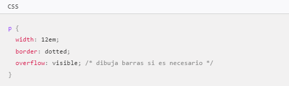
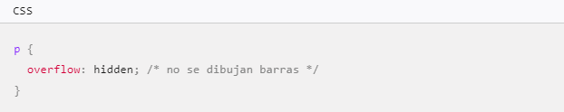
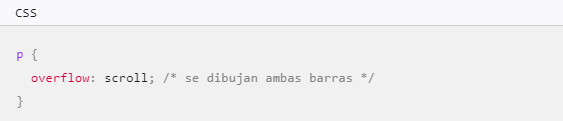
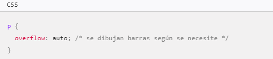

Para estructurar un cronograma basado en las 14 progresiones del pensamiento matematico, es importante diseñar un plan que permita a los estudiantes desarrollar sus habilidades de manera gradual y coherente
| Valores | Definición | Codigo | Ejemplo |
| overflow: visible | Valor por defecto. El contenido no es recortado, podría ser dibujado fuera de la caja contenedora. |  |
Para estructurar un cronograma basado en las 14 progresiones del pensamiento matematico, es importante diseñar un plan que permita a los estudiantes desarrollar sus habilidades de manera gradual y coherente |
| overflow: hidden | El contenido es recortado y no se muestran barras de posición. |  |
Para estructurar un cronograma basado en las 14 progresiones del pensamiento matematico, es importante diseñar un plan que permita a los estudiantes desarrollar sus habilidades de manera gradual y coherente |
| overflow: scroll | El contenido es recortado y el navegador web usa las barras de desplazamiento, se haya recortado contenido o no. Esto previene cualquier problema con las barras de desplazamiento apareciendo o desapareciendo en un entorno dinámico. Puede que las impresoras impriman contenido excedente. |  |
Para estructurar un cronograma basado en las 14 progresiones del pensamiento matematico, es importante diseñar un plan que permita a los estudiantes desarrollar sus habilidades de manera gradual y coherente |
| overflow: auto | Depende del agente de usuario. Navegadores de escritorio como Firefox proveen barras de desplazamiento si hay contenido excedente. |  |
Para estructurar un cronograma basado en las 14 progresiones del pensamiento matematico, es importante diseñar un plan que permita a los estudiantes desarrollar sus habilidades de manera gradual y coherente |